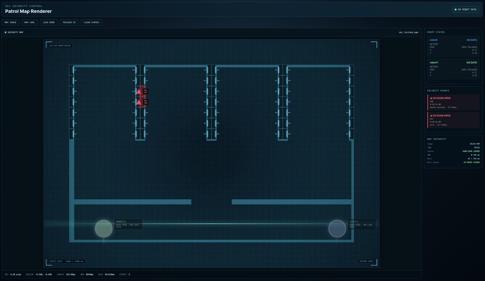
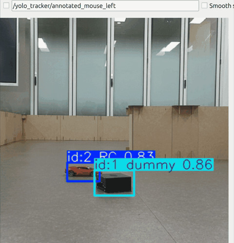
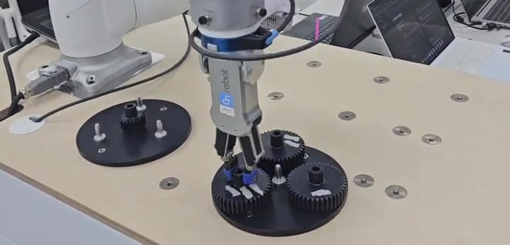

협동로봇 · 2026.10 · PL
BuildMind
말로 요청한 블록 설계를 AI가 만들고, M0609가 흩어진 블록을 찾아 조립합니다. AI 설계 생성 · 설계 DB · 웹 화면 · YOLO seg 학습을 맡았습니다.
ROS 2YOLO segClaudeNext.js
같은 내용(프로젝트 6건)을 다섯 가지 방식으로 놓아 본 초안입니다. 사이트 글꼴 · 색 그대로이며, 어느 방식이든 카드를 누르면 상세 페이지(projects/…)로 갑니다. 모바일에서는 모두 한 열로 바뀝니다.
위에 분류 필터, 아래 같은 크기 카드가 3열로 줄지어 늘어납니다. 지금 사이트가 쓰는 방식이고, 팝업 대신 상세 페이지로 보낼 수도 있습니다.
장점 몇 개가 늘어도 그대로 붙이면 됨 · 필터로 분류 가능 단점 대표작과 작은 실습이 같은 크기로 보여 경중이 안 드러남
말로 요청한 블록 설계를 AI가 만들고, M0609가 블록을 찾아 조립합니다.

협동로봇이 다회용기를 카메라 없이 집고 닦아 세척기 팔레트에 꽂습니다.

Isaac Sim에서 AMR이 가져온 박스를 P3020이 찾아 집고 컨베이어로 분류합니다.

TurtleBot4 2대가 데이터센터 랙을 순찰하며 열린 도어를 YOLO로 판별합니다.

TurtleBot4로 지도를 만들고 RC카를 찾아 따라갑니다.

DRL로 짠 기어 조립을 ROS 2 Python으로 옮겼습니다.
대표작은 사진과 설명 상자가 겹치는 큰 카드로 좌우 번갈아, 그 아래 "그 밖의 프로젝트"는 작은 카드 격자. 방금 보신 초안 방식입니다.
장점 경중이 분명하고 대표작이 돋보임 · 늘어나는 건 아래 격자에 붙이면 됨 단점 대표작이 4개 이상이면 세로가 길어짐
말로 요청한 블록 설계를 AI가 만들고, M0609가 흩어진 블록을 찾아 조립합니다. AI 설계 생성 · 설계 DB · 웹 화면 · YOLO seg 학습을 맡았습니다.
협동로봇 1대가 다회용기를 카메라 없이 집고 닦아 세척기 팔레트에 꽂습니다. 인터페이스 · 운영 화면 · 기록 DB · 셀 통합을 맡았습니다.
탭(협동로봇 / AMR / Digital Twin / 미니)으로 나누고, 카드는 왼쪽 사진 + 오른쪽 글의 가로형 2열. 사진이 작아 글이 더 많이 들어갑니다.
장점 분류가 뚜렷하고 카드마다 역할 · 숫자까지 보임 · 개수 늘어도 탭 안에서만 늘어남 단점 탭 뒤에 숨은 프로젝트는 한눈에 안 보임
AI가 만든 블록 설계를 M0609가 찾아 조립
다회용기를 카메라 없이 집고 닦아 적재
AMR이 가져온 박스를 P3020이 찾아 분류
TurtleBot4 2대 데이터센터 순찰
사진 없이 한 줄에 하나씩. 행에 마우스를 올리면 배경이 바뀌고, 누르면 상세 페이지로. 현직 개발자 사이트(brittanychiang "archive", mxb.dev)에서 많이 쓰는 방식입니다.
장점 20개가 되어도 한 화면 · 비교가 쉬움 · 담백함 단점 사진이 없어 첫인상이 약함 → 대표 3개는 B처럼 위에 두고 그 아래에 목록으로 두는 조합이 흔함
가운데 선을 두고 시간순으로 카드가 좌우 번갈아 붙습니다. My Journey 섹션과 합쳐 "프로젝트 = 여정"으로 보여 줄 수 있습니다.
장점 성장 순서가 보임 · 늘어나면 아래로 이어 붙이면 됨 단점 세로가 길고, 최신이 위에 오게 하려면 순서를 거꾸로 둬야 함